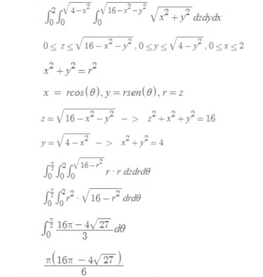
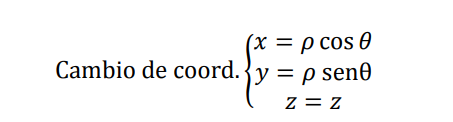
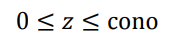
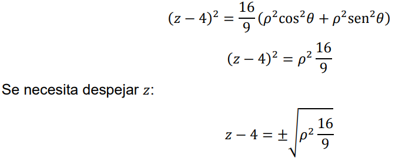
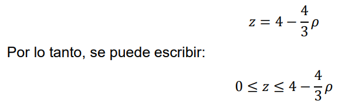
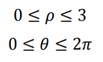
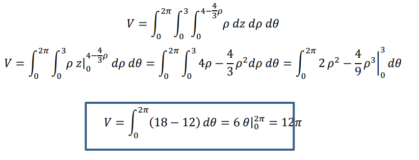

Frace Motivacional
Nunca concideres el estudio como una obligacion, sino como una oportunidad para penetrar el bello mundo del saber (Albert Einstein).
Concepto de integrales triples
una integral triple extiende el concepto de una integral al caso en que F es una funcion de tres variables independientes cuyo dominio es una region cerrada acotada en el espacio de 3 dimensiones. En este tipo de espacio los conceptos de conjunto abierto, conjunto cerrado, region, punto frontera, punto interior, region cerrada, y region cerrada acotada son definidos por extensiones de las definiciones en el espacio de dos dimensiones, con una adaptacion de la terminologia. Por demas del calculo de volumenes de solidos, una funcion muy importante es el calculo de centros de masa y momentos de inercia.
 Notacion de integral triple
Notacion de integral triple
Integrales triples en cordenadas esfericas
Problema de integrales triples en coordenadas esfericas
coneccion a coordenadas cilindricas
Resuelto a mano:

Calculando volumenes con integrales triples
El ejercicio nos pide encontrar el volumen del siguente cono
Como podemos apreciar el radio del cono es de 3 y la altura es de 4
Para resolver este ejercicio utilizaremos el cambio a coordenadas cilindricas

Donde p es el jacobiano, importante resaltar que nuestras nuevas variables seran: p, teta y z y tienen nuevos limites:

reemplazamos las variables en la ecuacion:

y modificamos nuestros limites:

Luego analizamos las proyecciones sobre el plano XY

por ultimo integramos con los limites definidos:

Asi obtenemos el valor del volumen del cono (12 pi) mediante una integral triple con cambio de coordenadas cilindricas
Desarrolladores
El equipo encargado de desarrollar esta investigacion fueron: Cesar Gonzalo Carpio Paiva, Juan Carlos Castro Barreda, Marko Marcelo Itucayasi Humeres, Jesus Alonso Vilca Samanez; estudiantes de la prestigiosa universidad nacional de San Agustin, para el curso de calculo en varias variables con la intencion de desarrollar nuestros conocimientos como programadores y los adquiridos en el curso matematico